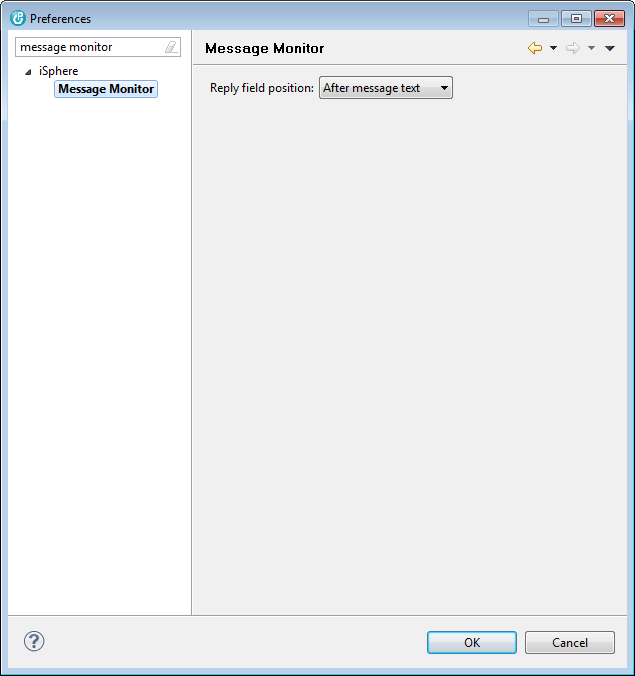

The available options are:
| Reply field position | - | This option specifies the position of the message reply field of the "IBM i Message" dialog. The reply field can be displayed above or below the message text. Some people reported problems, when the field is below the message text. |